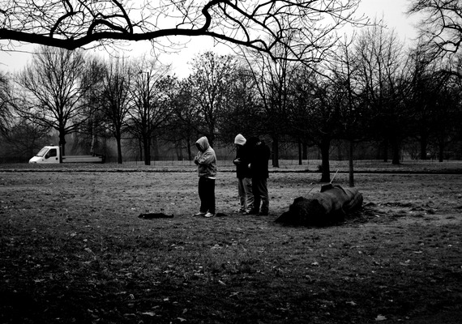

I'm building this site slowly, at night, eating cereal.
The site used to just contain the photo below, which I took back in 2010. I'm going to keep it here until I figure out where I want to put it. Thanks for popping by, anyway. Come back often!
